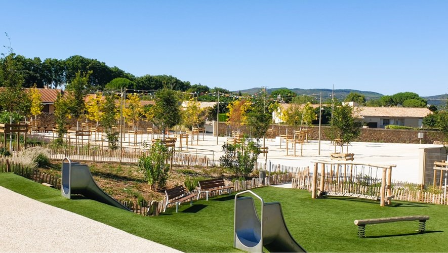

Espace Jean Raynal – Roujan
Création de massifs, pose de voliges, pose de ganivelles, plantation d'arbres, d'arbustes et de plantes, création d'escaliers en traverses paysagères.
- Contexte
- Parc public
- Travaux réalisés
- Terrassement, plantations, pose de matériaux, entretien
- Matériel utilisé
- Outils manuels, engins, machines
- Mon rôle
- [à compléter]